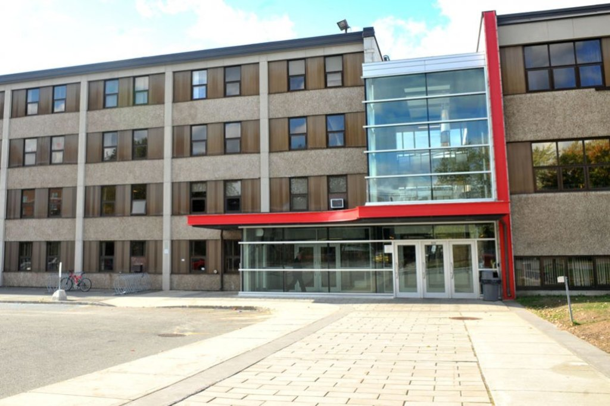

Mes études
Je suis de retour aux études après 18 ans. J'ai réussi mon DEP en infographie en 2001 et je travaille dans ce domaine depuis ce temps.
Je crois que l'avenir de mon métier est le web, c'est pourquoi je me suis inscrite au cours d'AEC.

Lien vers index
- École primaire L'Assomption
- École primaire La Maisonnée
- École primaire St-Étienne
- École Secondaire La Poudrière
- École Secondaire Marie-Rivier
- Cégep Drummondville (Science humaine)
- Centre 24 Juin (DEP infographie)